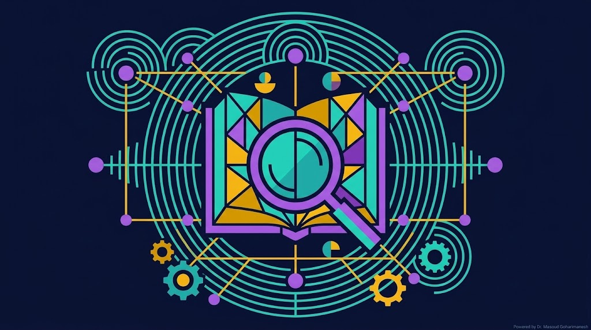
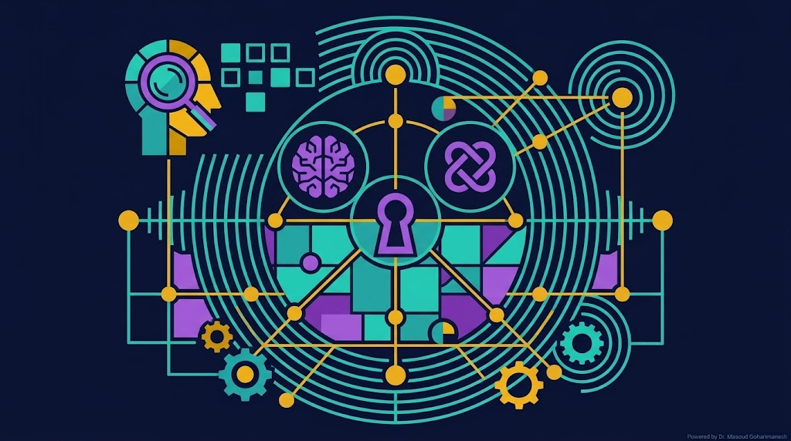
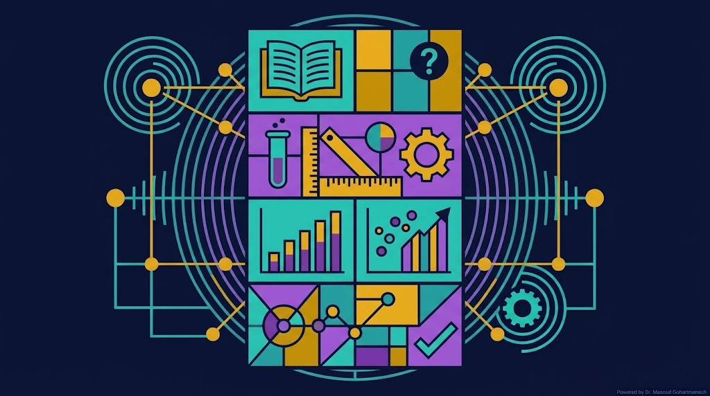
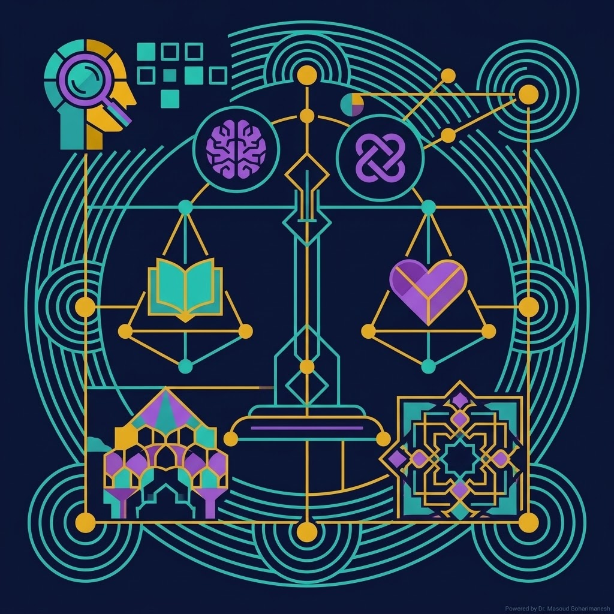
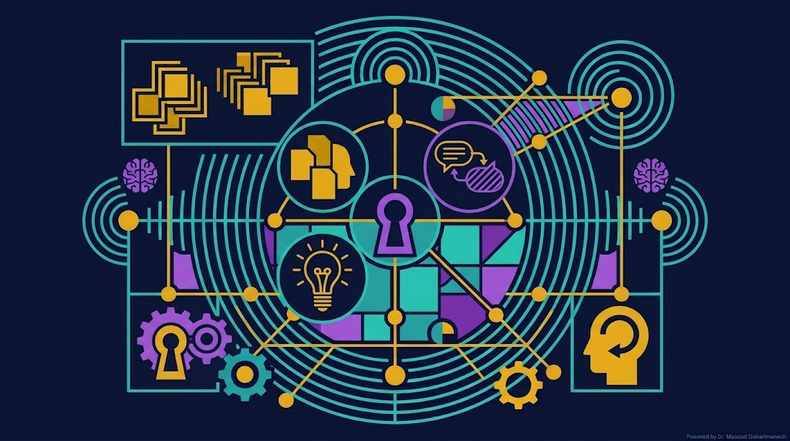
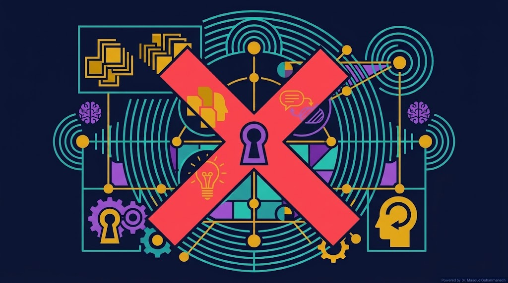
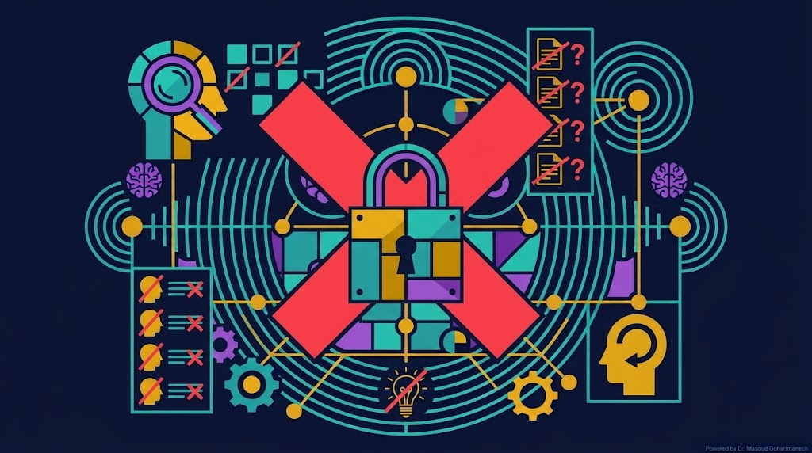
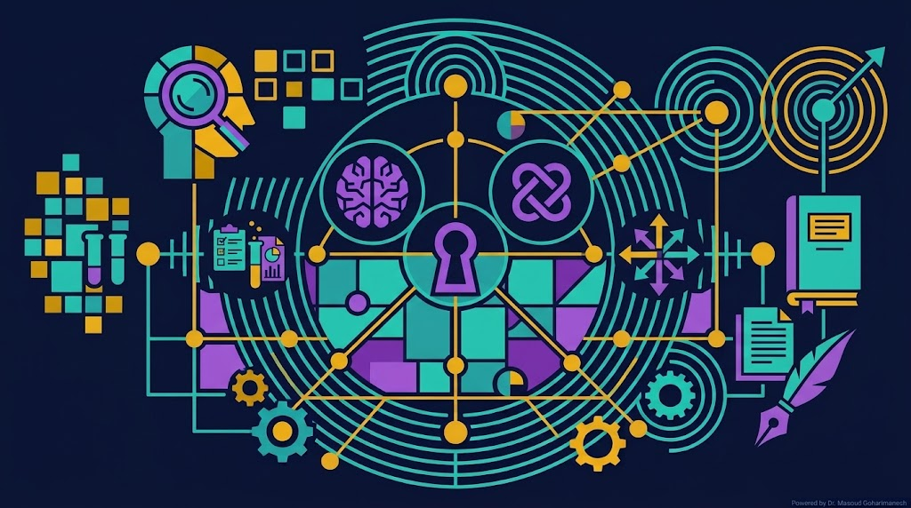
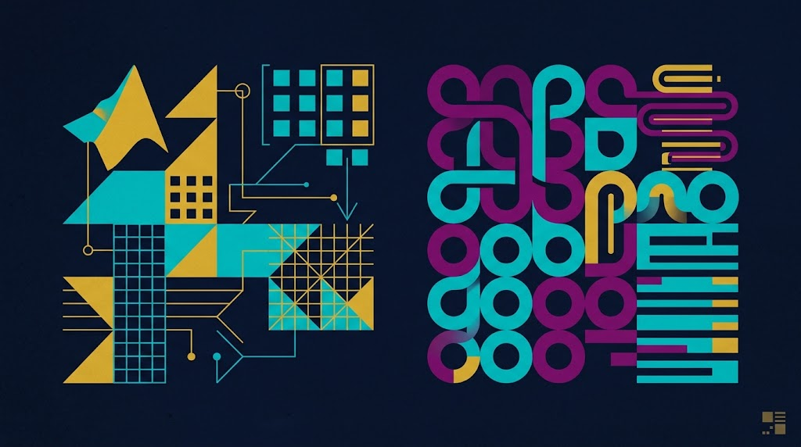

بسم الله الرحمن الرحیم
جلسه ۱: درآمدی بر پژوهش، اخلاق علمی و تفکیک مفاهیم
معادله یادگیری از دادهها — قلب پژوهش علمی
\[ \hat{f} = \arg\min_{f \in \mathcal{H}} \left( \frac{1}{N} \sum_{i=1}^{N} L(y_i, f(x_i)) + \lambda \|f\|^2 \right) \]
کشف الگو از دادههای تجربی — همان هدف والای پژوهش
دکتر علی کوچی
دانشیار گروه مهندسی مکانیک
دکتر مسعود گوهری منش
دانشیار گروه مهندسی مکانیک
دانشگاه تربت حیدریه — نیمسال اول

پژوهش یک فرآیند systematic، objective و reproducible برای کشف حقیقت است.
گزارش یک رویداد بدون تحلیل عمیق و بدون نیاز به بازتولید.
کشف روابط علت و معلولی، با روشمندی دقیق و قابلیت بازتولید.
پژوهش موتور پیشرفت علم، فناوری و حل مسائل جامعه است.
تفاوت اصلی: پژوهش به دنبال «چرا» و «چگونه» است، نه فقط «چه».
پژوهش یک تلاش systematic و objective برای یافتن پاسخ به یک سوال مشخص است که منجر به دانش جدید میشود.
فرآیند منظم و مرحلهبهمرحله با روششناسی مشخص.
بدون سوگیری شخصی، مبتنی بر شواهد و دادهها.
نتایج باید توسط دیگران قابل بازتولید باشد.

هر پژوهش باید یک هدف مشخص داشته باشد. هدف پژوهش تعیین میکند که ما به دنبال چه چیزی هستیم و چرا.
هدف: کشف قوانین بنیادی طبیعت. بدون کاربرد فوری. مثال: مطالعه خواص گرافن.
هدف: حل یک مشکل عملی. مثال: ساخت حسگر گرافنی برای تشخیص گاز.
هدف: بهبود یک محصول یا فرآیند موجود. مثال: افزایش حساسیت حسگر گرافنی.
هدف پژوهش باید SMART باشد: Specific, Measurable, Achievable, Relevant, Time-bound.
یکی از مهمترین اهداف پژوهش، مرور پیشینه (Literature Review) است. اگر کارهای گذشتگان را بررسی نکنیم، ممکن است:
مثال کلاسیک: چرخ
اگر مخترع چرخ، کارهای گذشتگان (استفاده از غلتک) را بررسی نمیکرد، هرگز به ایده چرخ نمیرسید. مرور پیشینه، نقطه شروع نوآوری است.
مرور پیشینه به ما میگوید: «الان کجای مسیر هستیم» و «چه شکافهایی (Gaps) وجود دارد».
روی هر گره کلیک کنید تا تعریف و ویژگیهای آن را ببینید.
متن زیر را بخوانید و تشخیص دهید متعلق به کدام نوع است.
«در این مطالعه، اثر پارامترهای مختلف بر روی بازدهی توربین بررسی شد. نتایج نشان داد که افزایش دما تا ۵۰۰ درجه سانتیگراد باعث بهبود ۱۵ درصدی بازدهی میشود.»
مقدمه، بیان مسئله، اهداف
روششناسی، ابزارها، دادهها
نتایج، جداول، نمودارها
بحث، تفسیر، نتیجهگیری

«دادهها با استفاده از نرمافزار MATLAB و روش المان محدود تحلیل شدند. مشبندی با ۱۰۰۰ المان انجام گرفت.»
«هدف این پژوهش، ساخت یک حسگر گرافنی برای تشخیص گاز متان در دمای اتاق است.»
«مطالعات پیشین نشان دادهاند که حسگرهای گرافنی حساسیت بالایی دارند (Smith et al., 2020). با این حال، هیچ مطالعهای تاکنون اثر دما را بر حساسیت آنها بررسی نکرده است.»
مفهوم انتحال در ادب و علم ایرانی ریشهای عمیق دارد. انتحال به معنای نسبت دادن کلام یا اثر دیگری به خود است.

گزارش صادقانه دادهها و نتایج
ارجاع دقیق به منابع دیگران
عدم سوگیری در تحلیل و تفسیر
احترام به حقوق شرکتکنندگان

«یک researcher دادههای آزمایشگاهی خود را طوری تغییر داد که نتایج معنادار شوند.»
Retraction به معنای پس گرفتن رسمی یک مقاله توسط ژورنال به دلیل کشف تخلف علمی است.
جعل داده، سرقت علمی، خطاهای جدی
از دست رفتن اعتبار، ممنوعیت از انتشار
ریترکت مقالات متعدد در حوزه مهندسی به دلیل دستکاری داده

Blacklisting به معنای قرار گرفتن نام محقق یا ژورنال در فهرست سیاه است.

مقالهای در حوزه مهندسی مکانیک که به دلیل Falsification دادهها ریترکت شد.
درس: اخلاق در پژوهش یک انتخاب نیست، یک ضرورت است.
آیا میتوان از دادههای یک مقاله دیگر استفاده کرد؟
به پاسخ فکر کنید و سپس اسلاید بعدی را ببینید.
بله، اما با شرایط:
استفاده بدون ارجاع = Plagiarism

از انتخاب موضوع تا انتشار مقاله — ۸ جلسه
نمونه کد ساده برای محاسبه میانگین دادههای تجربی.

تفاوت اصلی پژوهش با گزارش را در یک پاراگراف توضیح دهید.
یک مقاله علمی در حوزه مهندسی مکانیک پیدا کنید و بخشهای IMRAD آن را مشخص کنید.
مفهوم انتحال را با یک مثال از تاریخ ایران توضیح دهید.
یک سناریوی فرضی از بیاخلاقی پژوهشی طراحی کنید و پیامدهای آن را تحلیل کنید.
ارسال تمرینها به: A.koochi@gmail.com
فرمت Subject: [ResearchMethod] HW01 - نام و نام خانوادگی - شماره دانشجویی
در این جلسه با مفاهیم پایه پژوهش، اخلاق علمی و تفکیک مفاهیم آشنا شدیم.
جلسه بعد: انتخاب موضوع و پیشینه پژوهش
معادله یادگیری از دادهها — قلب پژوهش علمی
\[ \hat{f} = \arg\min_{f \in \mathcal{H}} \left( \frac{1}{N} \sum_{i=1}^{N} L(y_i, f(x_i)) + \lambda \|f\|^2 \right) \]
با تشکر از توجه شما 🌟
دکتر علی کوچی و دکتر مسعود گوهری منش